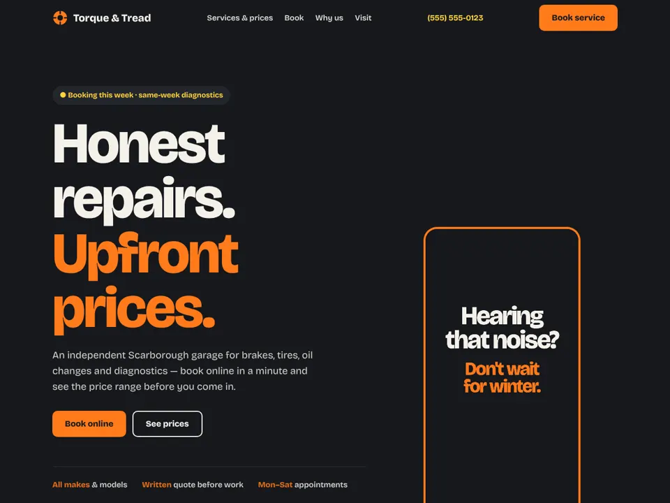
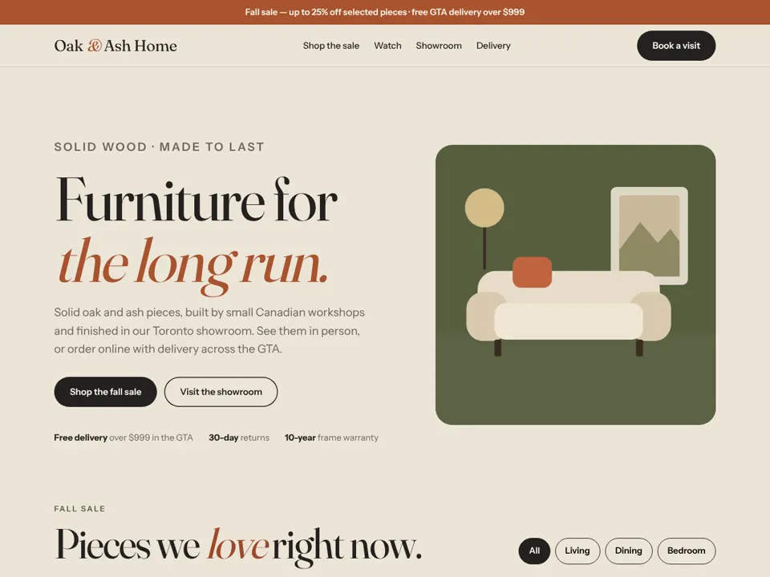
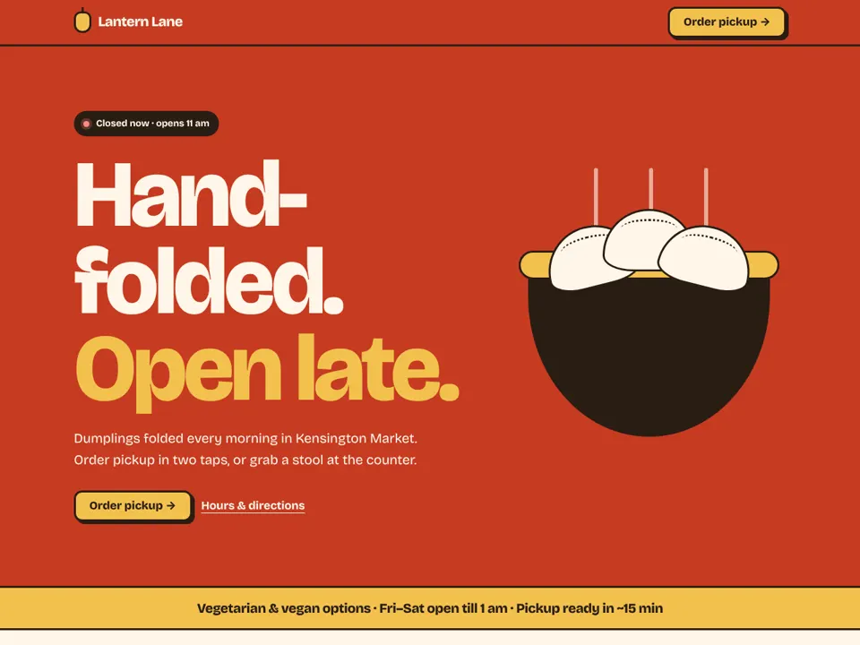
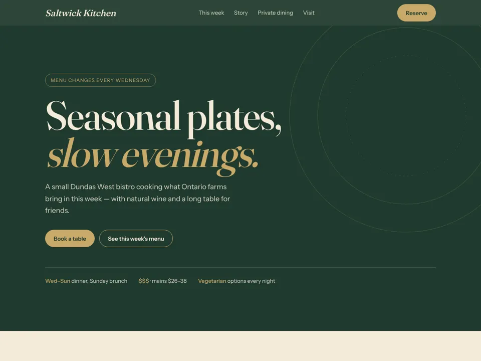
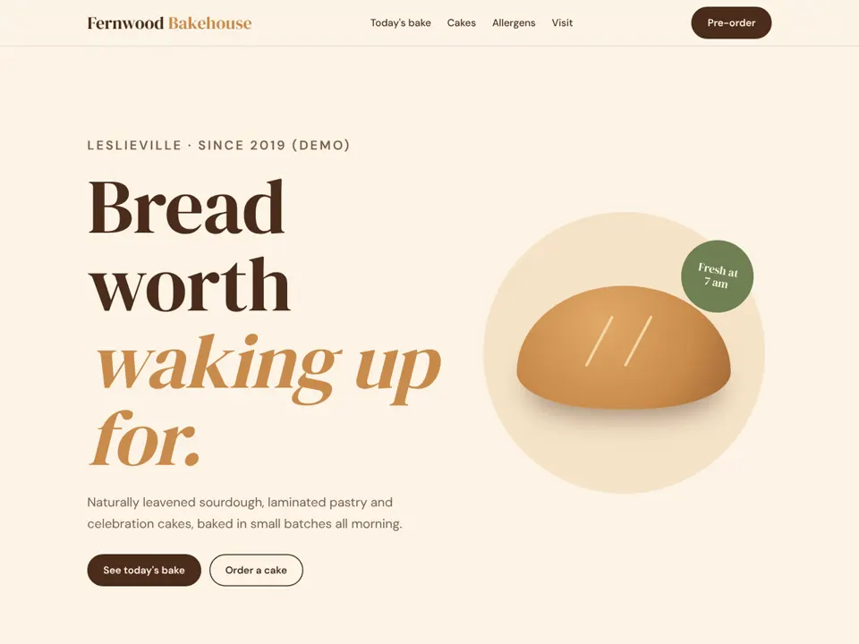

Fix the foundations
A website that turns visits into calls, bookings and sales.
- Mobile speed & accessibility
- Clear services, prices & products
- Booking, quote and order flows
- On-page SEO & analytics
Six Pixel checks how people find your business today — your website, Google search, AI assistants and Google Maps — fixes what’s losing you customers, then keeps new ones coming with social content and short promo videos.
For garages, shops, clinics, salons, restaurants and other local businesses across Toronto & the GTA.
01The problem
People decide where to go in a few taps. If your business is missing, outdated or confusing in any of these places, they choose someone else.
Your Business Profile, photos, hours and reviews decide whether you show up — and whether they call.
ChatGPT, Gemini and Google’s AI Overviews recommend businesses whose facts are clear and consistent online.
Short videos are often the first impression. No recent posts reads as “maybe closed”.
Six Pixel fixes all three — starting with a free growth check.
02Growth audit
One package that looks at your whole online presence — not just the website — so you know exactly where customers are slipping away.
Speed on phones, clear services and prices, calls, booking and checkout that actually work.
What you rank for, what you should rank for, and the page fixes that close the gap.
How ChatGPT, Gemini and AI Overviews describe you today — and the facts, FAQs and structured data they need.
Business Profile categories, services, photos, hours and posts, plus consistent listings everywhere.
Rating, volume, recency and replies — and a simple way to ask happy customers for reviews.
Which channels matter for your business, what to post, and how often.
You get a plain-English report — what’s working, what’s costing you customers, and the top fixes in order of impact.
Start with a free check03Services
Pick what the audit says matters most. Everything is built to be fast, measurable and yours to keep.
A website that turns visits into calls, bookings and sales.
Show up when people search nearby or ask an assistant.
Content that brings people back and reaches new ones.
04Who it’s for
Different businesses win customers in different places. The audit focuses on the ones that move the needle for yours.
Online booking, service menus and steady review growth.
On requestService-area pages, quote requests and local trust signals.
On request05Demo work
Five working concept sites for fictional Toronto businesses — each with its own promo video, set up for Google, Maps and AI search.

An independent garage with upfront price ranges, online booking and a seasonal tire-swap promo video.
Open demo
A showroom selling online: sale prices, room filters, delivery info and a sale promo video.
Open demo
Order-first site for a busy counter, with dietary filters and live open hours.
Open demo
Reservations, a weekly menu as real text and private-dining enquiries.
Open demo
A live bake schedule, cake pre-orders and allergen info.
Open demoAll five businesses are fictional. Names, prices, menus and addresses are made up for demonstration.
06Promo video
Concept videos for the demo businesses — sized for Reels, TikTok and Shorts, readable with the sound off, each ending in one clear call to action.
07Process
You run the business. We handle the website, the listings, the content and the reporting.
A quick look at your site, Google Maps, AI search and social — and the biggest gaps.
The fixes that matter most for your business, in order, with a fixed price.
We make the changes, you review them on your phone, and we submit everything to Google.
Optional: social posts, promo videos, profile updates and a simple monthly report.
08Packages
Every business starts somewhere different, so each quote is fixed after your free growth check. No long contracts.
Know exactly where customers slip away.
Free first check
Book a checkThe audit’s fixes, done for you.
Fixed quote after check
Get a free checkKeep new customers coming.
Monthly · cancel anytime
Ask about monthly09FAQ
Still unsure? Send a message — you’ll get a straight answer.
Six areas: your website (speed, mobile, clarity, calls to action), Google search (SEO), AI search (how ChatGPT, Gemini and Google's AI Overviews describe you), your Google Maps / Business Profile, reviews and reputation, and your social media and video. You get a plain-English report with the top fixes in order of impact.
Local businesses in Toronto and the GTA that rely on nearby customers — auto repair shops, furniture and home stores, restaurants and cafés, bakeries, salons, clinics and home-service trades.
GEO (generative engine optimization) means making your business easy for AI assistants to understand and recommend. It relies on clear, consistent facts — services, prices, hours, location and FAQs — on your website and Google Business Profile, plus structured data.
Often not. If your current site can be fixed, Six Pixel fixes it. A rebuild is only recommended when it is cheaper or clearly better for you.
Short vertical videos for Instagram Reels, TikTok and YouTube Shorts, built from your own photos and clips plus motion graphics and AI-assisted editing, with captions. Every video is reviewed by a person and posted only with your approval.
The first growth check is free. After that you get a fixed quote for the fixes you choose, and optional monthly plans for social content and videos — no long contracts.
10Contact
Send your website, Google Maps link and social handles. You’ll get a short, honest growth check — what’s working and what’s costing you customers. Free.
What to send